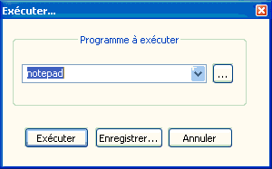

Exécuter...
Le menu vous permet d'exécuter des applications à partir de
Notepad++, par exemple pour ouvrir votre fichier en cours dans un navigateur
ou de le compiler avec un compilateur externe. Vous pouvez passer rune ligne de commande avec
les évenuels paramètres du programme pour action sur l'état actuel de votre document.

Pour exécuter une nouvelle commande:
Une boîte de dialogue apparaîtra et vous demandera le chemin d'accès au programme et, éventuellement,
des paramètres de ligne de commande. Vous pouvez utiliser Parcourir pour rechercher votre programme.
La liste déroulante fournit les dernières saisiez de programmes à exécuter. Les arguments de la ligne de commande peuvent
utiliser les paramètres du document en cours, et sont toujours enfermés dans $(...), avec
comme valeurs possibles :
- FULL_CURRENT_PATH
- le chemin d'accès complet au document actif.
- CURRENT_DIRECTORY
- Le répertoire du document actuel réside en
- FILE_NAME
- Le nom de fichier du document, sans le répertoire.
- NAME_PART
- Le nom du fichier sans l'extension.
- EXT_PART
- L'extension du présent document.
- NPP_DIRECTORY
- Le répertoire qui contient l'instance de
Notepad++.exe en cours d'exécution.
- CURRENT_WORD
- Le texte actuellement sélectionné dans le document.
- CURRENT_LINE
- Le numéro de ligne courant qui est sélectionné dans le document (la première ligne a le numéro 0).
- CURRENT_COLUMN
- La colonne actuelle du curseur (la première colonne a le numéro 0).
Par exemple,
|
"$ (NPP_DIRECTORY) \ Notepad + +. Exe" multiInst-"$ (FULL_CURRENT_PATH)"
|
ouvrira une nouvelle instance de Notepad++ avec le fichier en cours.
N'oubliez pas de mettre des guillemets autour des chemins au cas où
les paramètres contiennent des espaces (pour le
Notepad++ consultez les options de ligne de commande).
Pour exécuter une commande existante:
Dans le menu La
liste de toutes les commandes est disponible, sans oublier celles que vous mémorisez.

Pour enregistrer une commande:
Dans le menu tapez la commande
à enregistre puis appuyez sur Enregistrer ....
Une boîte de dialogue apparaîtra et vous demandera un nom pour la commande, ainsi que la combinaison de touches associée.
Pour modifier ou supprimer une commande
Le Gestionnaire de Raccourcis affiche
toutes les commandes disponibles de manière uniforme; vous pouvez par conséquent
modifier tout raccourci existant, y compris ceux des commandes de .
On accède aussi à cette procédure par
.
Comme le nom l'indique, ceci ne couvre pas la modification du texte même de la commande - vous devez pour cela
éditer shortcuts.xml.